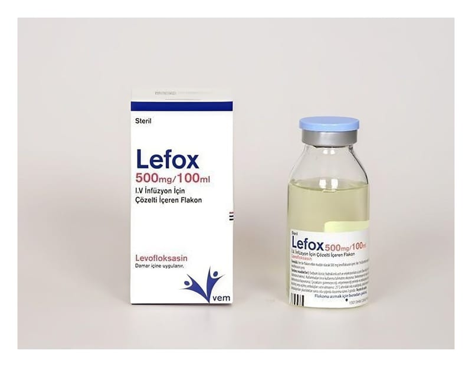

Lefox 500 mg/100 ml IV İnfüzyon İçin Çözelti İçeren Flakon, 1 Adet

Ne için kullanılır
KT · Bölüm 1LEFOX İ.V., damar içine uygulanan berrak, yeşilimsi sarı renkte bir çözeltidir. İlacınızın kutusu içinde 1 ml’sinde 5 mg levofloksasin içeren, toplam 100 ml çözelti içeren bir adet cam şişe bulunur. LEFOX İ.V. bakterilere karşı etkili bir antibiyotiktir. Florokinolonlar adı verilen antibiyotik grubuna dahildir. Bakterilerin büyümesini, çoğalmasını engeller ve bakterilerin yok olmasını sağlar. LEFOX İ.V. etkin maddesi olan levofloksasine karşı duyarlı olan bakterilerin neden olduğu enfeksiyonların tedavisinde kullanılır.
Doktorunuz antibiyotik tedavisini ağızdan alamayacak durumda olduğunuz için damar içine uygulanacak bu LEFOX İ.V. formunu, sizde aşağıdaki durumlardan biri bulunduğu için reçete etmiş olabilir: Toplumdan edinilmiş zatürre (pnömoni) Bu ilacı kullanmaya başlamadan önce KULLANMA TALİMATINI dikkatlice okuyunuz, çünkü sizin için önemli bilgiler içermektedir. Bu kullanma talimatını saklayınız. Daha sonra tekrar okumaya ihtiyaç duyabilirsiniz. Eğer ilave sorularınız olursa, lütfen doktorunuza veya eczacınıza danışınız. Bu ilaç kişisel olarak sizin için reçete edilmiştir, başkalarına vermeyiniz. Bu ilacın kullanımı sırasında doktora veya hastaneye gittiğinizde doktorunuza bu ilacı kullandığınızı söyleyiniz. Bu talimatta yazılanlara aynen uyunuz. İlaç hakkında size önerilen dozun dışında yüksek veya düşük doz kullanmayınız.
İdrar yolları ve böbrekte gelişen iltihap (piyelonefrit) dahil, komplikasyonlu böbrek ve idrar yolu enfeksiyonları Prostat iltihabı Deri ve yumuşak doku enfeksiyonları: Apse (irin kesesi), selülit, furonkül, impetigo (derinin bulaşıcı yüzeysel mikrobik enfeksiyonu), piyoderma (irinli deri enfeksiyonu), yara enfeksiyonlarının neden olduğu komplikasyonsuz deri ve deri ekleri enfeksiyonları. Hastanede edinilmiş zatürre (pnömoni) Havaya karışmış şarbon mikrobuna maruz kalma